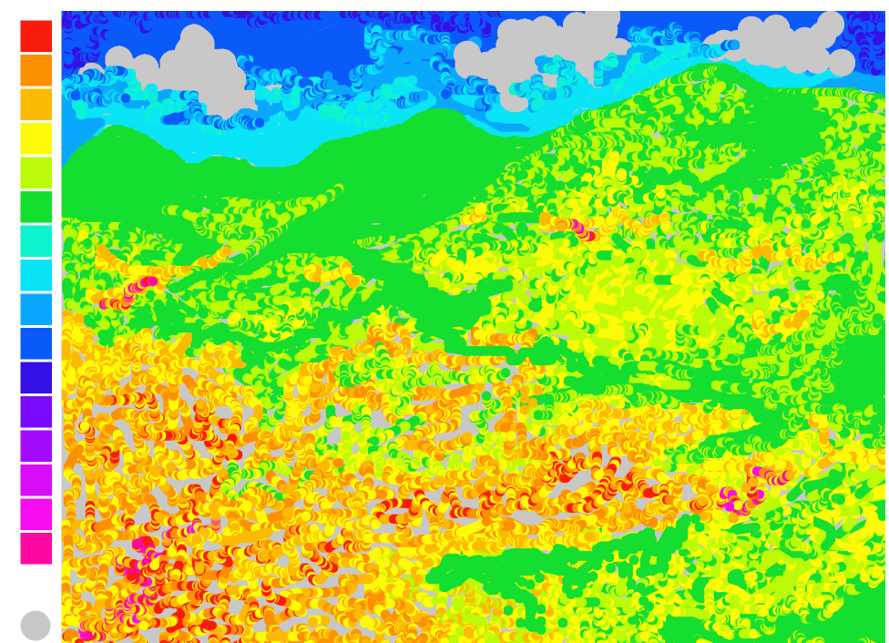

Feel free to choose a color, or two, or three. This interface allows an individual to play around with, and create using any number of color combinations. It implements toggle buttons, by clicking on any of the colored squares to the left of the canvas, an individual can turn the colors "on" and "off".
